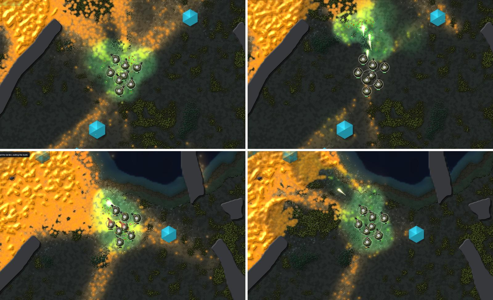
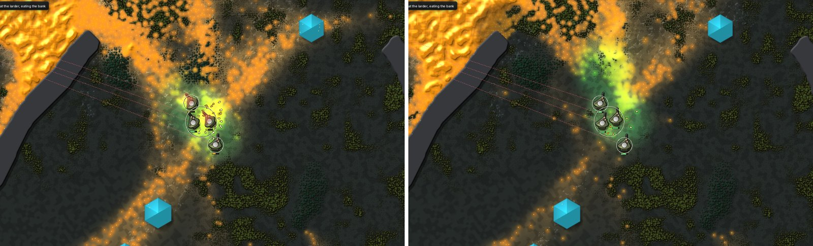
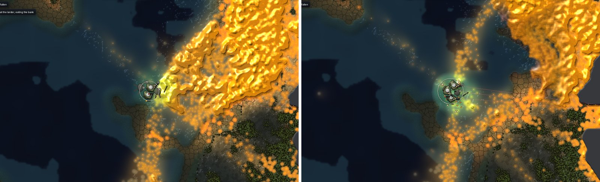

<title>Setting Slime</title>
<meta name="claude:viewport-fit-sides" content="cover">
<link rel="stylesheet" href="https://fonts.googleapis.com/css2?family=Inter:wght@400;600&family=Space+Grotesk:wght@500;700&display=swap">
<style>
:root { --bg:#f6f3ec; --fg:#1d1b17; --muted:#6b655a; --card:#fffdf8; --line:#e2dccf; --accent:#c76a0a; --good:#2f7d4f; }
@media (prefers-color-scheme: dark) { :root:not([data-theme="light"]) { --bg:#16140f; --fg:#ece6d8; --muted:#a39b8a; --card:#201d16; --line:#37322a; --accent:#f0a347; --good:#6cc493; color-scheme:dark } }
:root[data-theme="dark"] { --bg:#16140f; --fg:#ece6d8; --muted:#a39b8a; --card:#201d16; --line:#37322a; --accent:#f0a347; --good:#6cc493; color-scheme:dark }
body { background:var(--bg); color:var(--fg); font:15px/1.55 Inter, system-ui, sans-serif; padding-left:max(16px, env(safe-area-inset-left, 0px)); padding-right:max(16px, env(safe-area-inset-right, 0px)); padding-block:24px 48px }
main { max-width:980px; margin:0 auto }
h1, h2 { font-family:"Space Grotesk", Inter, sans-serif; text-wrap:balance; line-height:1.2 }
h1 { font-size:1.9rem; margin:0 0 .3rem }
h2 { font-size:1.25rem; margin:2rem 0 .5rem }
p { max-width:68ch }
.sub { color:var(--muted); margin:0 0 1.2rem }
figure { margin:1rem 0; background:var(--card); border:1px solid var(--line); border-radius:10px; padding:10px }
figure img { display:block; width:100%; border-radius:6px }
figcaption { color:var(--muted); font-size:.9rem; margin-top:.5rem }
.wrap { overflow-x:auto }
table { border-collapse:collapse; font-size:.92rem; min-width:520px; width:100% }
th, td { text-align:right; padding:6px 10px; border-bottom:1px solid var(--line); font-variant-numeric:tabular-nums }
th:first-child, td:first-child { text-align:left }
th { font-weight:600; color:var(--muted) }
b.k { color:var(--accent) }
.labels { display:grid; grid-template-columns:1fr 1fr; gap:10px; font-size:.85rem; color:var(--muted); margin-top:.4rem }
</style>
<main>
<h1>Setting slime</h1>
<p class="sub">Simulation-use plan step E2a, 2026-11-17. A walker on its old ground (the crust) where the scar says it was hurt stops, stops breeding and takes three blows to kill; it wakes when the scar fades. Off by default, behind <code>setting=1</code>. Planet 3, llvmpipe, rifles. One seed for the 2 x 2, four for the standing squad: a look, not a census.</p>

<h2>Standing and moving, seed 1</h2>
<figure>

<div class="labels"><span>Stands, setting off</span><span>Stands, setting on</span><span>Moves at 45 s, setting off</span><span>Moves at 45 s, setting on</span></div>
<figcaption>75 s. Eight rifles hold a post; the moving squad walks 50 cells north to a fresh front at 45 s. With setting on the body holds back from the line instead of pressing into it.</figcaption>
</figure>
<div class="wrap"><table>
<tr><th></th><th>Killed 0-45 s</th><th>45-60 s</th><th>60-75 s</th><th>45-75 s</th><th>Soldiers at 90 s</th><th>Set at 60 / 75 s</th></tr>
<tr><td>Stands, off</td><td>442</td><td>125</td><td>401</td><td>526</td><td>5</td><td>-</td></tr>
<tr><td>Stands, on</td><td>422</td><td>117</td><td>204</td><td><b class="k">321 (-39%)</b></td><td>7</td><td>157 / 164</td></tr>
<tr><td>Moves, off</td><td>442</td><td>291</td><td>801</td><td>1,092</td><td>4</td><td>-</td></tr>
<tr><td>Moves, on</td><td>422</td><td>317</td><td>399</td><td><b class="k">716 (-34%)</b></td><td>7</td><td>912 / 1,316</td></tr>
</table></div>
<p>Setting cuts a standing line's kills by 39% and moving recovers them (716 against 321). But the new front sets within 15 s too, so moving helps about as much with setting off. Standing is not yet punished more than moving; <code>set_scar</code> and the scar's gain are the dials for that.</p>

<h2>The standing squad on four seeds</h2>
<div class="wrap"><table>
<tr><th>Seed</th><th>Killed by 75 s, off</th><th>On</th><th>Walkers set at 60 s</th></tr>
<tr><td>1</td><td>733</td><td>414</td><td>217</td></tr>
<tr><td>2</td><td>474</td><td>454</td><td>0</td></tr>
<tr><td>3</td><td>504</td><td>484</td><td>15</td></tr>
<tr><td>4</td><td>1,253</td><td>1,079</td><td>1,098</td></tr>
</table></div>
<p>Fewer killed on 4 of 4 (sign test p = 0.06). How much depends on whether the squad stops on old ground: on seed 2 nothing sets.</p>
<figure>

<figcaption>Seed 1, 75 s. Left off (733 killed), right on (414 killed, 217 set at 60 s).</figcaption>
</figure>
<figure>

<figcaption>Seed 4, 75 s. Left off (1,253 killed), right on (1,079 killed, 1,098 set): the body stays back behind a set rim.</figcaption>
</figure>

<h2>Next (E2b)</h2>
<p>Set slime has no look of its own yet: the view reads fields, so it needs a count of set walkers a cell, which E2b's ground bit (set slime blocks soldiers) needs too. The look goes up as a blind A/B with E2b.</p>
</main>
